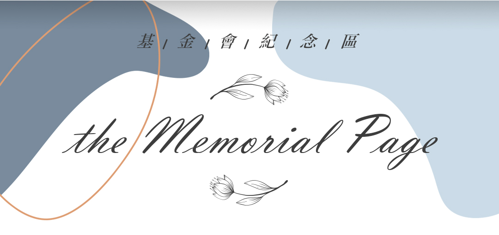

×

基金會創辦人 陳鳳文女士 （1951-2022)
財團法人科華文教基金會創辦人暨第一屆、第二屆董事長陳鳳文女士為台灣優秀跨國企業家，所創辦之曦爵集團自1980年起至今為台灣製鞋業表率，事業版圖橫跨全球，並秉持「一個事業，兩個志業」的願景與精神，對痲瘋病公益關懷、合唱與阿卡貝拉音樂推廣兩項志業戮力以赴，全心奉獻，為相關領域帶來難以估量的正面影響。
自2000年起，陳鳳文女士將現代阿卡貝拉風潮引入台灣，並以台灣為基地，串連全亞洲音樂家與愛好者；並於2010年創辦Vocal Asia，連年舉辦亞洲最大規模人聲音樂藝術節Vocal Asia Festival，以一民間企業家之力，將台灣與美國、歐洲、日本、韓國、港澳、中國大陸、新加坡、菲律賓、馬來西亞、印度等地連結為亞洲人聲音樂網絡，成就極為寶貴的亞洲音樂文化交流；同時，她促成了美國VoiceJam Festival之舉辦、策略聯盟丹麥Aarhus Vocal Festival，使得亞洲、歐洲、美國之間的人聲音樂產生影響極為深遠的實質流動。
2017年，她與志同道合的好友們創辦了財團法人科華文教基金會，以「樂計畫」之名，加強推動台灣人聲音樂教育的進行。2019年，她率領Vocal Asia Festival團隊與日本香川縣政府及瀨戶內國際藝術祭攜手合作，讓亞洲阿卡貝拉音樂的推廣達到了全新的高度。同時她對於合唱音樂發展的關心亦不落人後，協助了包括逢友合唱團、拉縴人男聲合唱團、原聲童聲合唱團、波茲南童聲合唱團等優秀合唱團的展演與經營推動。
陳鳳文女士對於音樂志業的奉獻，影響了全球數個世代的阿卡貝拉音樂人以及合唱人；她用她的真心和熱血，加上溫柔的關愛，包覆以經營企業的鋼鐵意志與對天主的信仰，在她的一生中盡心竭力，只為了這個世界能因為歌聲而更加和諧美好，人們能因為歌聲而連結彼此，不再有隔閡。
如今陳鳳文女士已回歸天家，安息主懷，我們將繼承她的志業與心願，持續讓美麗的人聲音樂流轉於人間。她將成為我們的歌，永遠被唱頌著，共鳴著，想念著。
自2000年起，陳鳳文女士將現代阿卡貝拉風潮引入台灣，並以台灣為基地，串連全亞洲音樂家與愛好者；並於2010年創辦Vocal Asia，連年舉辦亞洲最大規模人聲音樂藝術節Vocal Asia Festival，以一民間企業家之力，將台灣與美國、歐洲、日本、韓國、港澳、中國大陸、新加坡、菲律賓、馬來西亞、印度等地連結為亞洲人聲音樂網絡，成就極為寶貴的亞洲音樂文化交流；同時，她促成了美國VoiceJam Festival之舉辦、策略聯盟丹麥Aarhus Vocal Festival，使得亞洲、歐洲、美國之間的人聲音樂產生影響極為深遠的實質流動。
2017年，她與志同道合的好友們創辦了財團法人科華文教基金會，以「樂計畫」之名，加強推動台灣人聲音樂教育的進行。2019年，她率領Vocal Asia Festival團隊與日本香川縣政府及瀨戶內國際藝術祭攜手合作，讓亞洲阿卡貝拉音樂的推廣達到了全新的高度。同時她對於合唱音樂發展的關心亦不落人後，協助了包括逢友合唱團、拉縴人男聲合唱團、原聲童聲合唱團、波茲南童聲合唱團等優秀合唱團的展演與經營推動。
陳鳳文女士對於音樂志業的奉獻，影響了全球數個世代的阿卡貝拉音樂人以及合唱人；她用她的真心和熱血，加上溫柔的關愛，包覆以經營企業的鋼鐵意志與對天主的信仰，在她的一生中盡心竭力，只為了這個世界能因為歌聲而更加和諧美好，人們能因為歌聲而連結彼此，不再有隔閡。
如今陳鳳文女士已回歸天家，安息主懷，我們將繼承她的志業與心願，持續讓美麗的人聲音樂流轉於人間。她將成為我們的歌，永遠被唱頌著，共鳴著，想念著。